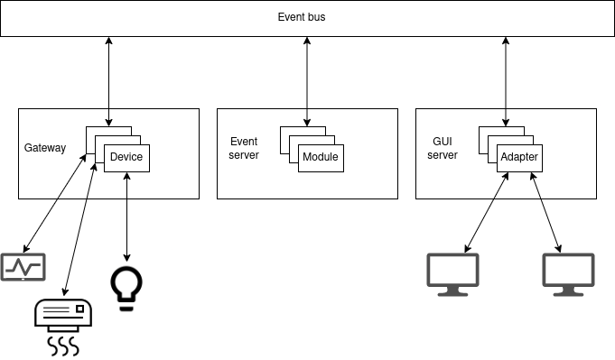
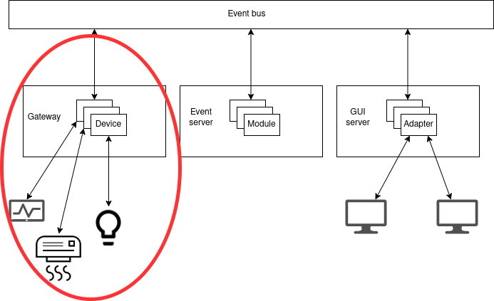
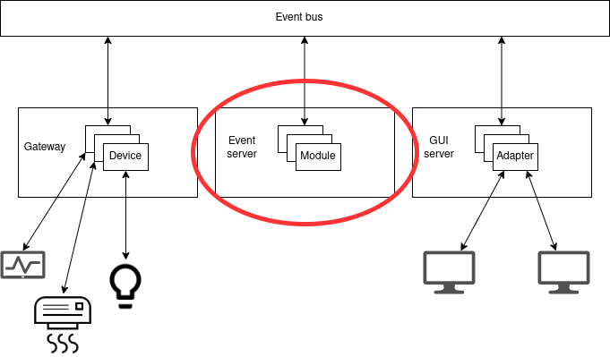
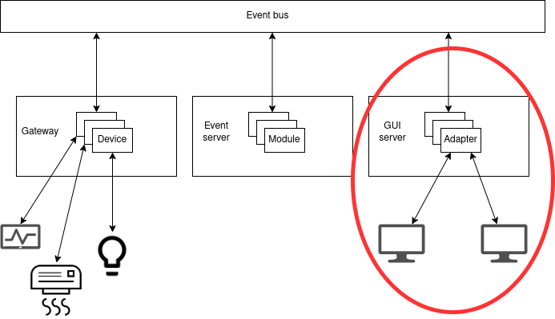

Komponente¶
Podsjetimo se jos jednom na event-driven arhitekturu industrijskog IoT sustava:
Spomenuli smo da komponente Hat projekta preslikavaju ovu arhitekturu, na sljedeci nacin:
hat-gateway komponenta je zaduzena za komunikaciju s uredajima
specijalizirani moduli hat-event komponente su zaduzeni za implementaciju procesne logike
hat-gui komponenta je zaduzena za vizualizaciju
Sve tri komponente imaju jednu zajednicku crtu, a to je da su same implementacije komponenti genericne, ali se konfiguriraju da koriste implementacije specijaliziranih modula u kojima je sadrzana konkretna domenska logika specificna za aplikaciju koja se razvija. To konkretno znaci da komponenta specificira odredeno sucelje koje modul mora zadovoljiti, implementator sustava napravi implementaciju tog sucelja i kad pokrece komponentu, u konfiguraciji joj zada da koristi tu implementaciju. Ovako se onda komponenta vise brine za „infrastrukturne” stvari, poput spajanja na event server, suradivanja sa specijaliziranim modulima, itd., a specijalizirani moduli implementiraju aplikaciju.
Prije nego sto se bacimo na konkretne komponente, kratki pregled terminologije koju cemo koristiti od sad:
device - specijalizirani modul gateway komponente
modul - specijalizirani modul event servera
adapter - specijalizirani modul GUI komponente
Pogledajmo sad arhitekturu sustava, sad kad znamo za specijalizirane module:
Gateway¶
Gateway komponenta upravlja svojim specijaliziranim modulima, devicevima, cija
zaduzenja su komunikacija s uredajima i pretvorba podataka koje prime preko te
komunikacije u dogadaje. Ona se pokrece pozivom hat-gateway kojem se preko
argument --conf zadaje konfiguracija u JSON ili YAML formatu. Konfiguracija
je specificirana JSON shemom,
a jedan minimalni primjer mogao bi biti:
---
type: gateway
event_server_address: tcp+sbs://127.0.0.1:23012
gateway_name: gateway1
devices:
- module: devices.ammeter
name: ammeter1
log:
disable_existing_loggers: false
formatters:
default: {}
handlers:
console:
class: logging.StreamHandler
level: INFO
stream: ext://sys.stdout
root:
handlers:
- console
level: INFO
version: 1
...
Najzanimljiviji argumenti ovdje su nam devices i gateway_name.
gateway_name ce nam biti bitan kasnije jer ce biti sadrzan u tipu dogadaja
s kojim rade devicevi (i njihovi konzumenti). devices sadrzi postavke
specijaliziranih modula, konfigurira se jedan device ciji modul je
implementiran u devices.ammeter (gateway ce u nekom trenutku pozvati liniju
import devices.ammeter). On ima pridruzen i name koji ima slicnu svrhu
kao i gateway_name, bit ce bitan kasnije jer ce biti sadrzan u tipu
dogadaja konkretnog devicea. log polje mozda izgleda zastrasujuce, ali to
je zapravo samo konfiguracija Pythonvog logging modula koja se ovdje
konfigurira da ispisuje logove na konzolu.
Pogledajmo sada sucelje
koje pojedina implementacija devicea mora zadovoljiti. Vidimo da ona mora biti
izvedena kao Python modul, koji ima globalne varijable device_type,
json_schema_id i json_schema_repo, te funkciju create.
device_type sluzi za klasifikaciju tipa uredaja s kojim komuniciramo,
obicno bude jednak imenu protokola koji se koristi. Namjena mu je slicna kao i
ranije spomenutim gateway_name i device_name konfiguracijskim
parametrima, budu elementi unutar tipa dogadaja koji se odnose na taj device.
json_schema_id i json_schema_repo su opcionalni pa ih necemo koristiti,
a odnose se na mogucnost konfiguriranja devicea. Svaki device moze propisivati
svoju strukturu konfiguracije, a format za specifikaciju te strukture je JSON
shema. Repo sadrzi shemu a ID kaze s kojim ID-em u shemi se konfiguracija
usporeduje. Opcionalni su, tako da ce u nasim primjerima uvijek biti None.
create funkcija zaduzena je za stvaranje instance klase Device.
Po dokumentaciji, ona prima tri argumenta: event klijent, konfiguraciju i
„prefiks” tipa dogadaja. S event klijentom smo se bavili u proslom dijelu,
takvog klijenta primamo ovdje i mozemo ga koristiti na isti nacin. Moze se
primjetiti da on nije bas istog tipa kao i event klijent iz proslog dijela,
razlog tome je cinjenica da gateway komponenta stvara svoj wrapper oko
originalne instance iz nekih infrastrukturnih razloga (jedan „pravi” klijent za
cijeli gateway, odredba pretplata itd.). Konfiguracija je drugi argument, ona
je jednaka bilo cemu sto se zapise u konfiguraciji gatewaya u elementima polja
devices. Treci argument, prefiks tipa dogadaja je zapravo tuple stringova
('gateway', gateway_name, device_type, device_name). Za tip dogadaja smo
odredili da je definiran kao tuple stringova, svi dogadaji s kojima device radi
moraju imati ovaj prefiks. To znaci da svaki dogadaj kojeg device registrira bi
trebao pocinjati s ova 4 stringa, npr. ('gateway', 'gateway1', 'iec104',
'iec104_device1', 'measurement_change'), ako je ime gatewaya gateway1,
tip devicea iec104, a ime iec104_device1. Gatway komponenta ne
prisiljava da bude ovaj prefiks, to je samo dobra praksa. Ista stvar vrijedi i
za primanje dogadaja, receive metoda event klijenta kojeg device primi u
create funkciji vracati ce samo dogadaje kao da je pretplacena na
(*event_type_prefix, '*'). Nije specificirano u prefiksu, ali nakon njega
se obicno navodi smjer komunikacije, odnosno ako dogadaj registrira device onda
je to gateway a ako ga registrira neki drugi aktor a device ga treba
primati, smjer je system. Opet, komponenta ne prisiljava ovo ali se potice.
Sad mozemo pogledati neku konkretnu implementaciju gateway devicea. Uzeti cemo
raniji primjer s ampermetrima i pretvoriti klasu funkcije Communication i
preraditi ju da vise ne zove process, vec samo registrira dogadaj i ne
brine sto se dalje dogada s njim:
from hat.drivers import iec104
import asyncio
import hat.aio
import hat.event.common
import hat.gateway.common
json_schema_id = None
json_schema_repo = None
device_type = 'ammeter'
async def create(conf, event_client, event_type_prefix):
device = Device()
device._async_group = hat.aio.Group()
device._event_client = event_client
device._event_type_prefix = event_type_prefix
device._async_group.spawn(device._main_loop)
return device
class Device(hat.gateway.common.Device):
@property
def async_group(self):
return self._async_group
async def _main_loop(self):
connection = await iec104.connect(
iec104.Address('127.0.0.1', 9999))
while True:
data = (await connection.receive())[0]
self._event_client.register([
hat.event.common.RegisterEvent(
event_type=(*self._event_type_prefix,
'gateway', str(data.asdu_address)),
source_timestamp=None,
payload=hat.event.common.EventPayload(
type=hat.event.common.EventPayloadType.JSON,
data=data.value.value))])
Jedna nejasnoca koja bi se mogla javiti citanjem ovog koda je svrha
hat.aio.Group klase, koristenja njene spawn metode, njenog vracanja
kroz property async_group, … Property async_group je potreban zbog
sucelja koje propisuje hat.gateway.common.Device (on nasljeduje
hat.aio.Resource, a on propisuje da mora postojati taj property). Ideja je
da se instanca tog objekta koristi za odredivanje zivotnog ciklusa devicea.
Instanca moze biti u otvorenom ili zatvorenom stanju, otvoreno stanje oznacava
da device treba raditi, a zatvoreno da ne treba. Metoda spawn od grupe
ponasa se slicno kao asyncio.create_task,
glavna razlika je da Task koji bi se vratio se veze uz stanje otvorenosti grupe
- ako se grupa ikad zatvori, Task ce se otkazati (poziv Task.cancel) - ovo
nam ide u korist jer onda stanje otvorenosti grupe zaista upravlja cinjenicom
izvrsava li se _main_loop ili ne.
Jedan detalj nismo spomenuli, a bitan je za pokretanje gatewaya s deviceom, je
potreba za registracijom dogadaja za paljenje devicea. U dokumentaciji
mozemo vidjeti kakvu strukturu imaju ti dogadaji. Dakle, potrebno je
registrirati dogadaj s tipom (*prefiks, 'system', 'enable') i payloadom
True jer to signalizira gateway komponenti da pokrene device koji smo
konfigurirali. Najjednostavnije to mozemo napraviti s odvojenom skriptom:
import hat.event.client
import hat.event.common
import asyncio
import random
import sys
async def async_main():
client = await hat.event.client.connect(
'tcp+sbs://127.0.0.1:23012', [])
await client.register_with_response([
hat.event.common.RegisterEvent(
event_type=('gateway', 'gateway1', 'ammeter',
'ammeter1', 'system', 'enable'),
source_timestamp=None,
payload=hat.event.common.EventPayload(
type=hat.event.common.EventPayloadType.JSON,
data=True))])
def main():
asyncio.run(async_main())
if __name__ == '__main__':
sys.exit(main())
Jos detalja za pokretanje, event server mora biti startan, gateway ga ocekuje
na adresi tcp+sbs://127.0.0.1:23012. Uz to, treba pokrenuti i simulator iz
prvog zadatka, inace ce device izbaciti exception jer connect nece proci.
Prilagodimo li sad naseg ranijeg konzumenta dogadaja (ili skriptu za upite) da
prate dogadaje tipa ('gateway', 'gateway1', 'ammeter', 'ammeter1', '*'),
vidjeli bismo da se zaista registriraju ovi dogadaji, nakon ammeter dijela
je identifikator mjerenja (ASDU adresa iz proslog zadatka), a payload je broj
koji predstavlja iznos mjerenja. Ako ima problema oko starta gatewaya, tipa
dolazi do ispisa greske No module named ..., dodajte direktorij iz kojeg
pokrecete u environment varijablu PYTHONPATH (linux (bash), windows).
Iduci korak je procesna logika u kojem cemo razviti specijalizirani modul koji ce primati informacije o strujama od devicea i stvarati nove dogadaje na temelju njih.
Event server¶
Event server smo vec vidjeli u situacijama gdje implementira sabirnicu dogadaja, a sad cemo vidjeti kako pomocu njegovih specijaliziranih modula mozemo implementirati procesnu logiku aplikacije. Ona se izvodi tako da se specijalizirani moduli event servera pretplate na dogadaje odredenog tipa i, kad se dogadaji s tim tipom registriraju, stvore nove dogadaje na temelju njih.
Mozemo preuzeti konfiguraciju iz proslog dijela, glavna razlika je da cemo sad
u module_engine/modules dodati konfiguraciju specijaliziranog modula:
---
type: event
backend_engine:
backend:
module: hat.event.server.backends.dummy
server_id: 1
communication:
address: tcp+sbs://127.0.0.1:23012
module_engine:
modules:
- module: modules.state
log:
disable_existing_loggers: false
formatters:
default: {}
handlers:
console:
class: logging.StreamHandler
level: INFO
stream: ext://sys.stdout
root:
handlers:
- console
level: INFO
version: 1
...
Dakle, u odnosu na dio gdje smo se fokusirali na nacin kako slati dogadaje
preko event servera, ovdje je razlika da smo dodali specijalizirani modul
modules.state (kao i kod gatewaya, ovo je Python ime modula, u nekom
trenutku event server ce zvati import modules.state).
Sad je potrebno zaista implementirati modul. Gledanjem dokumentacije,
mozemo vidjeti da se to radi tako da definiramo modul tako da implementiramo
Python modul koji ima globalne varijable json_schema_id,
json_schema_repo i funkciju create. Kod globalnih varijabli vrijedi
ista prica kao i kod deviceva, a create je korutina koja vraca instancu
klase hat.event.server.common.Module. Ona prima konfiguraciju modula i
referencu na instancu klase hat.event.module_engine.ModuleEngine.
Konfiguracija modula je iz konfiguracije cijelog event servera, ono sto je
napisano uz module: <Python ime modula>, a module engine je objekt koji
sluzi kao sucelje event servera prema modulu. Ako pogledamo njegovu
dokumentaciju,
vidimo da ima slicne metode kao event klijent.
Kao i device, modul nasljeduje hat.aio.Resource abstraktnu klasu, pa mora
imati async_group property. Uz njega, ima i property subscription
kojim se specificira na kakve dogadaje se modul pretplacuje (mala razlika je da
to sad vise nije lista tupleova, vec se predaje
hat.event.common.subscription.Subscription objektu).
Metoda create_session je iduca komplikacija. Ideja je da moduli zapravo ne
obavljaju registraciju dogadaja sami po sebi, vec da stvaraju sesije koje to
rade za njih. Ovo je vise do implementacijskih detalja event servera, gdje kad
se registrira dogadaj, event server stvori sesiju svakog modula i onda, ako se
modul pretplacuje na dogadaj koji se registrirao, koristi tu sesiju da stvori
nove dogadaje. Implementator modula ima korist od toga jer moze imati
distinkciju izmedu razlicitih sekvenci obrada podataka, necega za cime nemamo
potrebu u sklopu nasih zadataka - zbog toga cemo obradu podataka u sesiji
obicno samo proslijediti nazad modulu. create_session ne prima nikakve
argumente, a vraca instancu objekta hat.event.server.common.ModuleSession.
ModuleSession je abstraktna klasa koja nasljeduje hat.aio.Resource,
dakle ima property async_group iz istih razloga kao i device i modul. Uz
to, ima i metodu process koja prima i vraca listu dogadaja. Lista koju
prima je sadrzi dogadaje na koje se modul predplacuje kroz subscription
property, a lista koju vraca je sadrzi nove dogadaje koje zeli registrirati.
Mala razlika u odnosu na dosadasnji rad s registracijom dogdaja je da se ovdje
ne koristi RegisterEvent, vec je potrebno vratiti
hat.event.server.common.ProcessEvent. On se stvara pozivom module engineove
metode create_process_event. On prima dogadaj i identifikator izvora
dogadaja, hat.event.server.common.Source,
pa je dodatno u sesiji potrebno negdje drzati referencu i na njega.
Uz sve ovo imamo dovoljno informacija da napravimo primjer event server modula.
Uzeti cemo opet slucaj iz prvog zadatka s ampermetrima, a ovdje cemo napraviti
modul koji ce raditi istu stvar kao i Processing klasa, uparivanje
primljenog mjerenja sa strujama I1, I2 i I3, te racunanje struje I4. Ona bi
izgledala ovako:
import hat.aio
import hat.event.server.common
json_schema_id = None
json_schema_repo = None
async def create(conf, engine):
module = Module()
global _source_id
module._source = hat.event.server.common.Source(
type=hat.event.server.common.SourceType.MODULE,
name='modules.state',
id=1)
module._subscription = hat.event.server.common.Subscription([
('gateway', 'gateway1', 'ammeter', 'ammeter1', 'gateway', '?')])
module._async_group = hat.aio.Group()
module._engine = engine
module._state = {'I1': 0, 'I2': 0, 'I3': 0, 'I4': 0}
return module
class Module(hat.event.server.common.Module):
@property
def async_group(self):
return self._async_group
@property
def subscription(self):
return self._subscription
async def create_session(self):
return Session(self, self._async_group.create_subgroup())
def module_process(self, changes):
event = changes[0]
# dohvat zadnjeg elementa tipa dogadaja, za uparivanje s I1, I2, I3
measurement_id = event.event_type[-1]
current = {'0': 'I1',
'1': 'I2',
'2': 'I3'}.get(measurement_id)
if current is None:
return []
self._state[current] = event.payload.data
self._state['I4'] = (self._state['I1']
+ self._state['I2']
+ self._state['I3'])
return [
self._engine.create_process_event(
self._source,
hat.event.server.common.RegisterEvent(
event_type=('state', ),
source_timestamp=None,
payload=hat.event.server.common.EventPayload(
type=hat.event.server.common.EventPayloadType.JSON,
data=self._state)))]
class Session(hat.event.server.common.ModuleSession):
def __init__(self, module, group):
self._module = module
self._group = group
@property
def async_group(self):
return self._group
async def process(self, changes):
# delegacija obrade dogadaja nazad modulu
return self._module.module_process(changes)
Ovaj modul pretplacuje se na dogadaje koje registrira device i kreira svoje dogadaje koji sadrze stanje, u istom formatu kao i u prvom zadatku.
GUI server¶
Zadnja komponenta na koju se fokusiramo je GUI server, a ona sluzi za vizualizaciju podataka. Ona se, s jedne strane, spaja na event server i ukljucuje u interakciju s dogadajima, a, s druge, posluzuje HTTP servis na koji se korisnici mogu spojiti svojim web browserima i pregledati stanje sustava. Stanje sustava prezentira se kroz genericnu web aplikaciju, koja se moze konfigurirati da prikazuje preglede koje implementator sustava implementira. Aplikacija je implementirana u JavaScriptu i komunicira s GUI serverom pomocu WebSocket protokola, odnosno hat-juggler wrappera. Konkretan format stanja koje GUI server salje klijentskoj aplikaciji propisuju specijalizirani moduli GUI servera, adapteri.
Komponenta se pokrece pozivom hat-gui u komandnoj liniji. Zadaje joj se
argument --conf koji sadrzi putanju do JSON ili YAML konfiguracije koja
sadrzi konkretne postavke. Format konfiguracije propisan je JSON shemom, a
jedan minimalni primjer mogao bi biti:
---
type: gui
event_server_address: tcp+sbs://127.0.0.1:23012
address: http://0.0.0.0:23023
views:
- name: login
view_path: ./views/login
conf_path: null
- name: main
view_path: ./views/main
conf_path: null
initial_view: login
users:
- name: user1
password:
hash: 0927f26c1e200037ef44e622d39d5b7c201690c85b9aa86545d6583ecff2b02f
salt: 7af08c40f25d800fa3d1ab3f8199adbd
roles:
- user
view: main
adapters:
- module: adapters.state
name: state
log:
disable_existing_loggers: false
formatters:
default: {}
handlers:
console:
class: logging.StreamHandler
level: INFO
stream: ext://sys.stdout
root:
handlers:
- console
level: INFO
version: 1
...
Konfiguriraju se razne adrese, jedna za spajanje s event serverom, druga na
kojoj GUI server posluzuje podatke… Konfiguriraju se i viewovi, to su
spomenuti pregledi koje mi trebamo implementirati. Nakon toga slijedi
konfiguracija korisnika. GUI server obavlja rudimentarno upravljanje
korisnicima, u konfiguraciji se navode login podatci. Za lozinke se ocekuje da
su hashirane SHA256 algoritmom, i da je „posoljen” s nasumicnim bajtima u
salt polju i ponovno hashiran. Za potrebe nasih primjera, ove stvari ce
biti hardkodirane, uvijek koristimo postavke iz ove konfiguracije, a za
korisnika user1 lozinka je pass1. Uz login podatke a korisnika se moze
definirati koju ulogu (role) ima - na ovaj nacin moze se napraviti
distinkcija izmedu administratora i obicnih korisnika te koji view korisnik
vidi nakon sto se prijavi. Konacno, nakon korisnika ide konfiguracija
specijaliziranih modula, adaptera. Vidimo slicnu strukturu kao i kod
gatewayovih deviceva, zadaje se Python ime modula (npr. ovdje ce se u nekom
trenutku zvati import adapters.state) i ime adaptera koje ce se koristiti
da identificira taj adapter u komunikaciji s event serverom i klijentskom
aplikacijom.
Razvoj viewova, odnosno grafickih prikaza je tema za sebe koja ce biti pokrivena u odvojenom poglavlju. U ovom primjeru koristiti cemo gotovu, izbuildanu verziju viewova, a GUI server cemo samo konfigurirati da koristi te prikaze.
Glavni dio razvoja na serverskoj strani je implementacija adaptera. Pogledajmo
sad sucelje
koje ovi specijalizirani moduli moraju implementirati. Vidimo da on mora biti
izveden kao odvojeni Python modul s globalnim varijablama json_schema_id i
json_schema_repo te funkcijama create_subscription i
create_adapter. Za globalne varijable vrijede iste primjedbe kao i kod
deviceva i event server modula, to su opcionalne varijabe koje sluze za
validaciju konfiguracije koja je postavljena te ce biti None u nasim
primjerima. create_subscription treba moci primiti jedan argument,
konfiguraciju adaptera, a vraca instancu hat.event.common.Subscription
klase u kojoj se navodi na kakve tipove dogadaja se adapter pretplacuje.
Konacno, create_adapter funkcija prima konfiguraciju adaptera i event
klijent, a vraca instancu klase hat.gui.common.Adapter.
Ako pogledamo klasu hat.gui.common.Adapter vidimo da ona nasljeduje
hat.aio.Resource, dakle, kao i devicevi i event server moduli, mora imati
property async_group. Uz to sama adapterova klasa propisuje da mora
postojati metoda create_session koja prima jedan argument tipa
hat.gui.common.AdapterSessionClient.
Slicno kao i moduli event servera, adapteri nece sami direktno komunicirati sa
svojim klijetima, vec imaju sesije. U ovom kontekstu, jedna sesija predstavlja
vezu na jednog klijenta koji je spojen na GUI server (mozemo to zamisliti kao
da svaka otvorena sesija predstavlja jedan web browser koji je spojen na nas
server). Vidimo da hat.gui.common.AdapoterSession
zapravo nema nikakve dodatne metode i propertyje (osim, opet, async_group
jer je instance hat.aio.Resource). To znaci da imamo slobodu bilo kako
implementirati kako se tocno koristi AdapterSessionClient za komunikaciju s
klijentima.
Preko AdapterSessionClient-a adapterova sesija komunicira s web aplikacijom
u browseru. Vidimo da ona ima slicne metode i propertyje kao i juggler
konekcija (jer nam GUI server
zapravo predaje wrapper oko nje). Kod jugglera je ideja da povezuje dvije
komunikacijske tocke s WebSocket protokolom. WebSocket se inace specijalizira
za slanje poruka, a juggler nam pruza podrsku za neke dodatne funkcije. Jedna
od tih funkcija je sinkronizacija stanja - vidimo da Connection (i
AdapterSessionClient) ima propertyje local_data i remote_data.
Jedna strana komunikacije moze u local_data zapisati bilo kakav JSON
serijalizabilni objekt (preko metode set_local_data), i on ce se drugoj
strani pojaviti u njenom remote_data propertyju. Uz to, moguce je raditi i
obicno slanje poruka kroz send i receive metode, definirati RPC sucelja
itd. Prakticno, u radu s jugglerom, odnosno AdapterSessionClient-om,
najvise cemo se oslanjati na sinkronizaciju stanja i slanje poruka.
Sad imamo dovoljno informacija da napravimo jednostavnu implementaciju
adaptera. Nastavljamo s nasim primjerom ranijeg zadatka s ampermetrima. Ako se
sjecamo, napravili smo modul event servera koji registrira dogadaj tipa
('state') ciji payload je dictionary gdje su kljucevi imena struja, a
vrijednosti njihovi iznosi. Sad mozemo napraviti adapter koji ce to stanje
propagirati do klijenata:
import hat.aio
import hat.event.common
import hat.gui.common
import hat.util
json_schema_id = None
json_schema_repo = None
async def create_subscription(conf):
return hat.event.common.Subscription([('state', )])
async def create_adapter(conf, event_client):
adapter = Adapter()
adapter._async_group = hat.aio.Group()
adapter._event_client = event_client
adapter._async_group.spawn(adapter._main_loop)
adapter._sessions = set()
return adapter
class Adapter(hat.gui.common.Adapter):
@property
def async_group(self):
return self._async_group
async def create_session(self, juggler_client):
session = Session(
juggler_client,
self._async_group.create_subgroup())
self._sessions.add(session)
return session
async def _main_loop(self):
while True:
events = await self._event_client.receive()
for event in events:
state = event.payload.data
for session in self._sessions:
if session.is_open:
session.notify_state_change(state)
class Session(hat.gui.common.AdapterSession):
def __init__(self, juggler_client, group):
self._juggler_client = juggler_client
self._async_group = group
@property
def async_group(self):
return self._async_group
def notify_state_change(self, state):
self._juggler_client.set_local_data(state)
Ako ima nejasnoca vezanih uz poziv spawn metode, logika je ista kao i kod
devicea, pa predlazemo da pogledate taj dio. Dakle, adapter u _main_loop
ceka promjene stanja i kad primi dogadaj, proslijedi tu informaciju sesijama.
Sesije onda dalje tu informaciju proslijede web klijentima.
Sad mozemo pokrenuti hat-gui s ovim adapterom, no jos uvijek nam fale
viewovi. Kako smo spomenuli da je njihov razvoj odvojena tema za sebe, zasad
cemo koristiti prethodno buildane resurse. Njima, i svim ostalim
implementacijama koje smo radili u ovom poglavlju, mozete pristupiti na ovom
linku
Pokretanjem svega (hat-event, hat-gateway i hat-gui) i otvaranjem
adrese 127.0.0.1:23023 trebala bi se otvoriti prvo
login stranica (user1, pass1), a nakon logina prikaz u kojem se vidi JSON
reprezentacija stanja koje smo propagirali kroz dogadaje. Iduce vece poglavlje
bavit ce se osnovama razvoja grafickog sucelja u bibliotekama iz hat-open
projekta.